DualSAE
Separating Interpretability and Reconstruction in Sparse Autoencoders
1Stony Brook University 2Concordia University 3Mila–Quebec AI Institute
†Equal senior authorship
arXiv preprint, 2026
Abstract
Sparse Autoencoders (SAEs) are effective tools for mechanistic interpretability by decomposing neural representations into sparse and interpretable features. However, a single sparse representation in traditional SAEs is responsible for both reconstruction fidelity and interpretability, which are not guaranteed to align. To separate these objectives, we propose DualSAE, a modular framework that augments standard SAEs with a plug-in Residual Branch. A standard SAE serves as the Sparse Branch, learning a sparse code that contains the dominant semantics of the input. The added Residual Branch models the non-semantic information omitted by the Sparse Branch. We ensure that the contributions of the two branches towards the overall reconstruction have minimal overlap through a decorrelation loss. We also adopt a two-stage training strategy that first stabilizes sparse representation learning before coupling with the Residual Branch. Across diverse encoder–SAE configurations on two vision datasets and two language corpora, DualSAE achieves mean relative improvements of approximately 29% in reconstruction fidelity and 34% in interpretability (measured by monosemanticity score). Moreover, with more interpretable representations, DualSAE yields consistent performance gains in the downstream applications of topic modeling, hypothesis generation, and LLM steering. Qualitative analysis further suggests that the Sparse Branch indeed preserves dominant semantic content, whereas the Residual Branch captures non-semantic information to improve reconstruction fidelity.
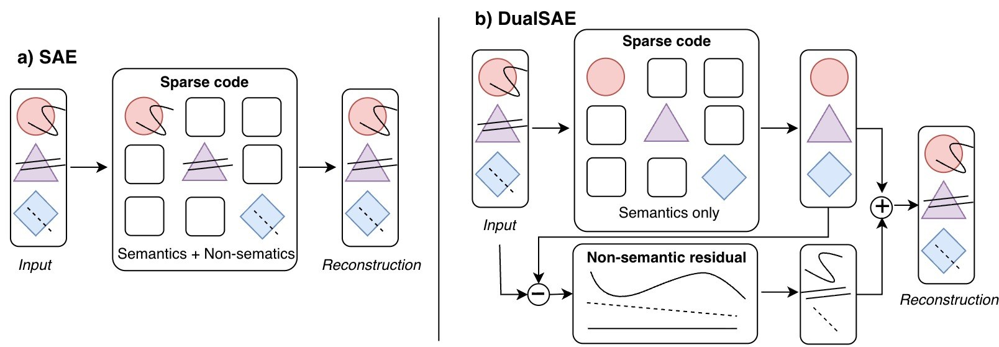
Motivation
Let \(x\) be an image embedding, \(\hat{x}\) its SAE reconstruction, and \(r = x - \hat{x}\) the residual. Does \(\hat{x}\) mostly carry the semantic information, the part shared by inputs of the same concept, while the non-semantic information stays in \(r\)? We test this with a BatchTopK SAE on CLIP embeddings of ImageNet-1K: each validation image queries its 50 nearest neighbors using \(\hat{x}\) (or \(r\)), and class purity is the fraction of retrieved images from the query's class.
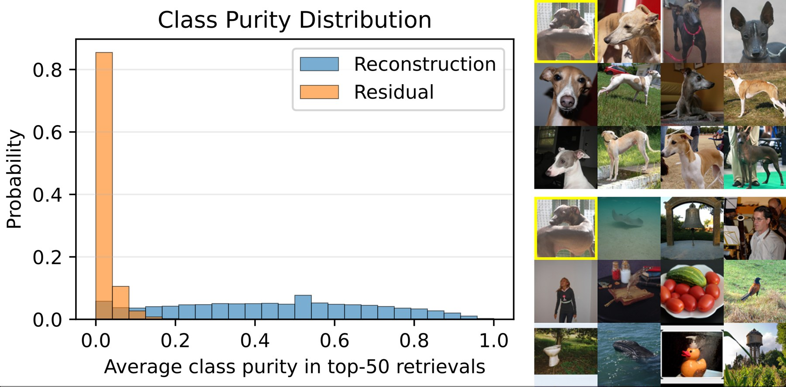
The sparse reconstruction keeps the dominant semantic structure, while the residual retains information that is weakly tied to semantic class identity. DualSAE therefore separates these two kinds of information instead of forcing them into a single sparse representation.
Method
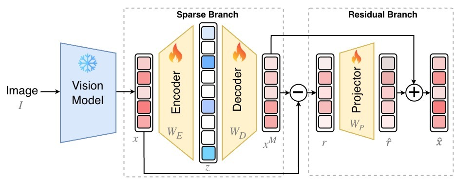
Sparse Branch
The Sparse Branch is a standard SAE with any sparsification rule \(S(\cdot)\), such as TopK, BatchTopK or JumpReLU. It maps the input to an overcomplete sparse code and reconstructs the dominant semantic content:
Residual Branch
We do not require \(x^M\) to reconstruct everything in \(x\): some of \(x\) is non-semantic information that sparse, interpretable features should not have to learn. A Residual Branch reads the residual through a projector \(W_P\) and a nonlinearity \(Q\), and the two branches are added:
Decorrelation loss
A Residual Branch alone could learn \(\hat{r} = r\) and overwrite information that the active sparse features already represent. Let \(D_x = W_D[:, \mathcal{A}(x)]\) hold the decoder directions of the latents active for \(x\). We penalize the component of \(\hat{r}\) in their span, and train with
At the identity solution \(\hat{r} = r\), the gradient of this objective with respect to \(\hat{r}\) is \(2\gamma\, D_x D_x^\top r\), which is non-zero whenever the residual has components along the active decoder directions, so the Residual Branch cannot simply copy them. Hard-sparsity SAEs (TopK, BatchTopK) do not use \(\mathcal{L}_{\mathrm{sparse}}\).
Two-stage training
The Sparse Branch is first trained alone as a standard SAE (warm-up), which stabilizes sparse representation learning; then both branches are trained jointly.
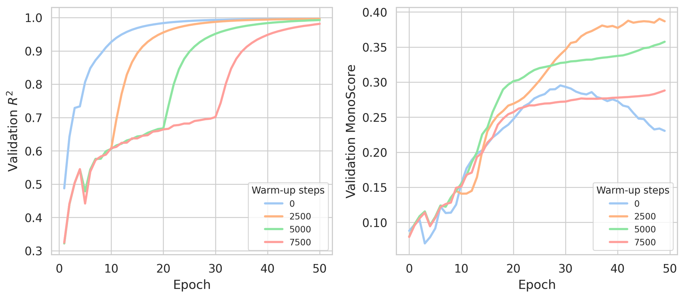
Results
DualSAE vs. SAE across encoders, SAE families and datasets
We pair six SAE families (TopK, BatchTopK, JumpReLU, MatryoshkaSAE, GatedSAE and CB-SAE) with their DualSAE counterparts on three vision encoders (CLIP, SigLIP2 and ViT-L/16) and two datasets, and measure reconstruction \(R^2\), MonoScore (MS), class purity, and KNN and linear-probe (LP) performance. On ImageNet-1K, DualSAE is higher than its SAE counterpart on all five metrics in all 18 encoder–SAE pairs. On OpenImagesV7, it is higher in all 18 pairs for \(R^2\), purity and KNN, in 16 for MonoScore and in 14 for LP.
Mean over three seeds (hover a row for mean ± standard deviation). KNN and LP are top-1 accuracy on ImageNet-1K and micro-F1 on OpenImagesV7. Values from the supplementary table Comparison of SAE variants across vision encoders.
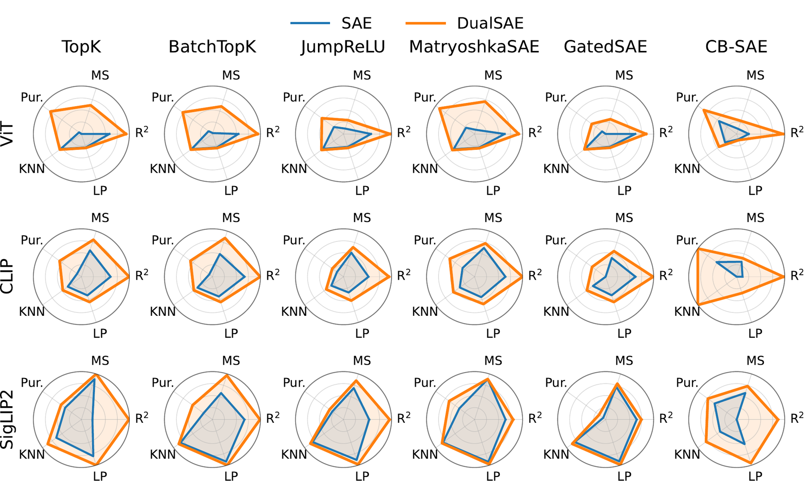
More interpretable sparse latents
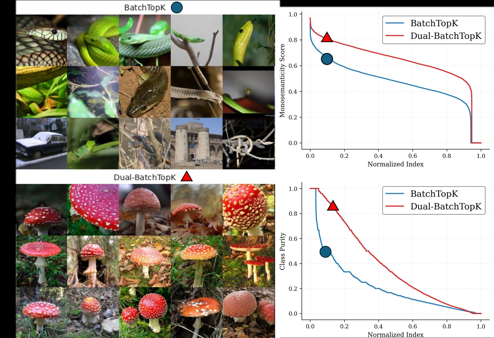
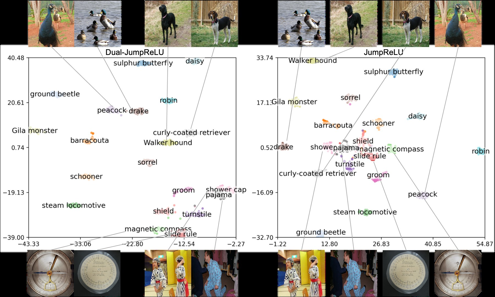
Joint training matters, not just extra capacity
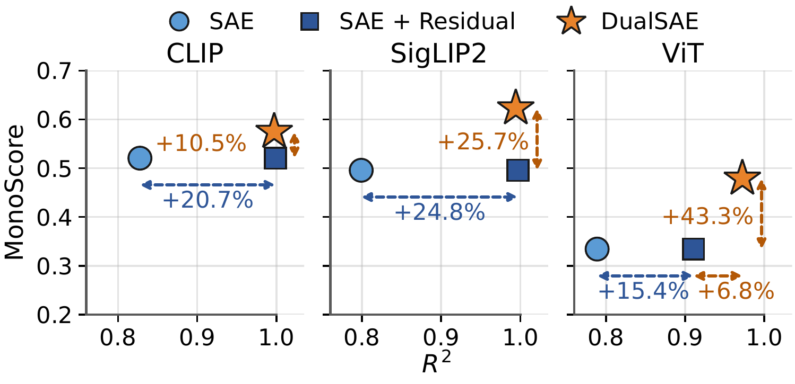
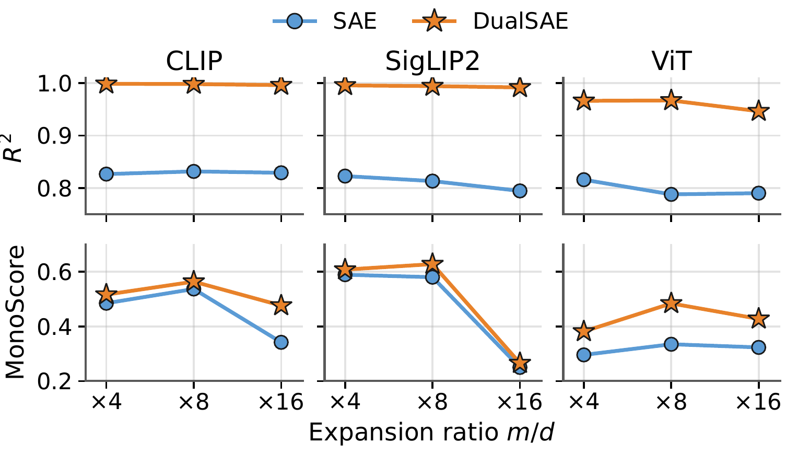
The decorrelation loss separates the branches
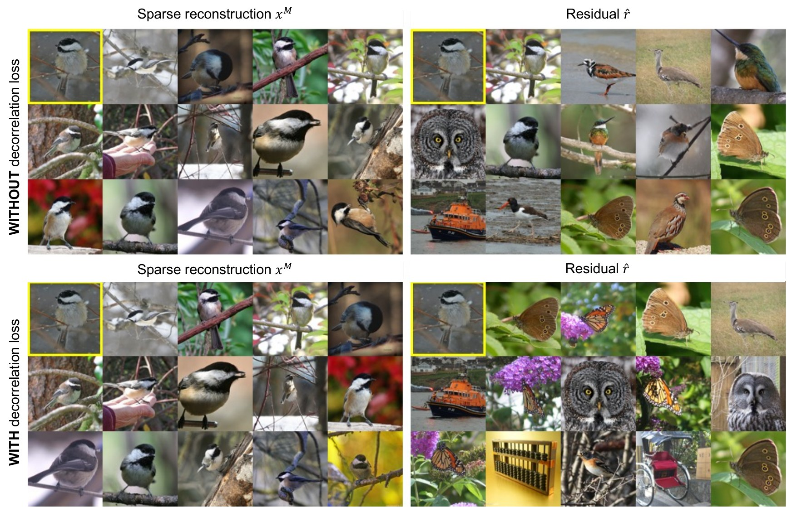
Language representations
DualSAE is not specific to vision. We train SAEs and DualSAEs on residual-stream activations at layer 12 of Pythia-410M (deduplicated) on two different corpora, OpenWebText (OWT) and GitHub code (GHC). DualSAE improves all four metrics over its standard counterpart for every SAE variant on both corpora, while perturbing the language model much less (lower \(\Delta\)CE and KL when its reconstruction is spliced back into the model).
| Method | ΔCE ↓ | KL ↓ | R2 ↑ | MS ↑ |
|---|
Language-model evaluation at layer 12 of Pythia (mean with standard deviation over seeds). Rows with a tinted background are DualSAE.
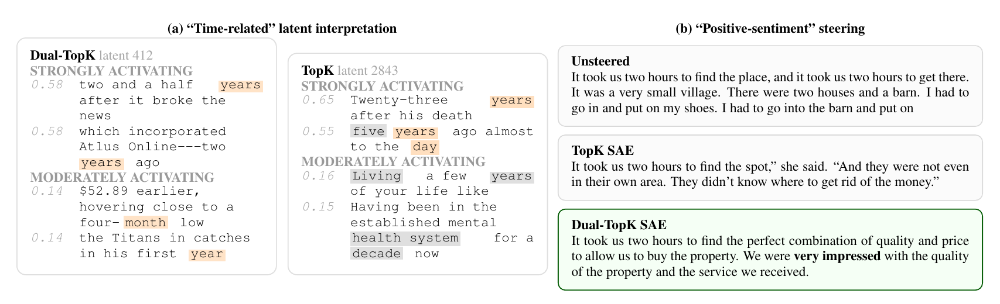
Downstream applications
With more interpretable features, DualSAE also helps the applications that SAEs are used for.
Topic modeling
Each sparse feature can be viewed as a topic atom. Applying the SAE-TM pipeline to standard SAE features and to DualSAE's sparse features, DualSAE yields concrete labels for the dominant object, attribute or scene, whereas the standard SAE assigns topics from weak or spurious associations. On ImageNet-1K and OpenImagesV7, DualSAE's topics are more diverse in almost all configurations and easier for an LLM judge to verify (intruder accuracy) in most.
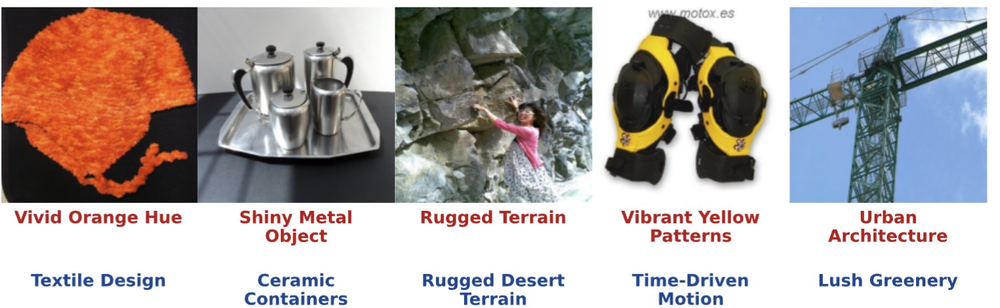
Hypothesis generation
Following HypotheSAEs, we select the 16 latents most discriminative of each class, have a VLM describe each one as a hypothesis, and test on held-out images how many are significantly associated with the class and how well they predict it (AUROC). DualSAE yields more significant hypotheses in 17 of 18 configurations, and higher AUROC in all six JumpReLU configurations and at most 0.005 lower elsewhere.
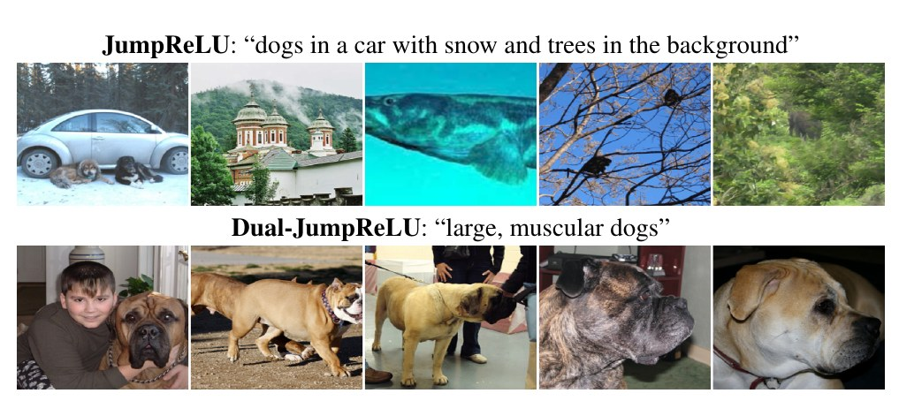
LLM steering
Adding a latent's decoder direction to Pythia's residual stream steers generation toward its concept; panel (b) of the language figure above shows a positive-sentiment example. Quantitatively, following AxBench with 10 concepts (Amazon reviews, AG News and GoEmotions) and the steering strength calibrated to the same KL budget for every SAE, the standard SAE has a lower mean than DualSAE in all 80 comparisons (4 settings × 10 concepts × 2 metrics); after Benjamini–Hochberg correction, it is significantly worse in 33 and significantly better in none.
Code
The repository contains the code for every experiment of the paper and its supplementary material, with a paper-to-code map. To train a Dual-BatchTopK SAE on CLIP features of ImageNet-1K:
git clone https://github.com/AtlasAnalyticsLab/DualSAE.git && cd DualSAE
pip install -r vision/requirements.txt
HF_HOME=./assets/hf DATA_ROOT=./data bash vision/prepare_assets.sh
cd vision
python extract_imagenet.py --model clip --split train
python extract_imagenet.py --model clip --split validation
python main.py --model dual --sparsity_mode batch_topk --dataset imagenet --extractor clip --seed 42 \
--decorrelation_coef 0.005 --warmup_steps 17500 --dead_check_interval 100 --lr 1e-4 \
--exp_name my_dual_btk --output_dir ./checkpoints
BibTeX
@misc{nguyen2026separating,
title = {Separating Interpretability and Reconstruction in Sparse Autoencoders},
author = {Anh Tien Nguyen and Dimitris Samaras and Mahdi S. Hosseini},
year = {2026},
eprint = {2611.25165},
archivePrefix = {arXiv},
primaryClass = {cs.LG},
url = {https://arxiv.org/abs/2611.25165}
}